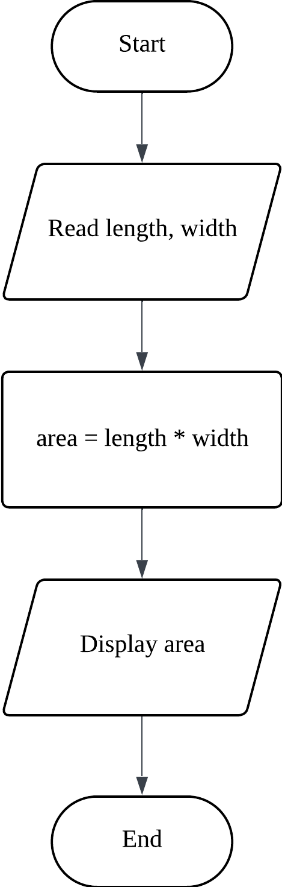
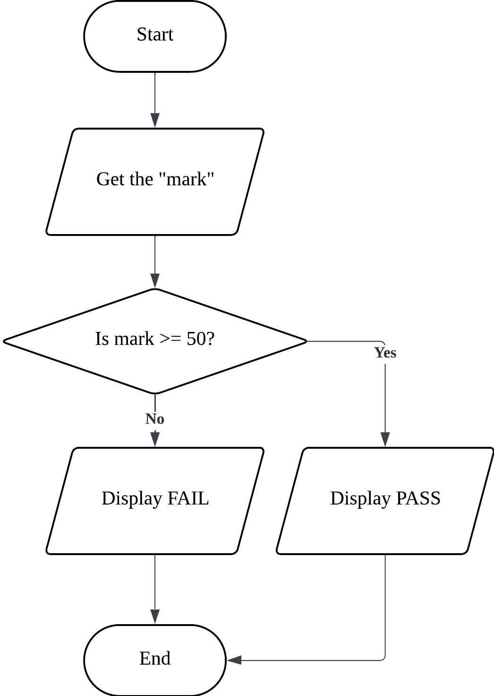
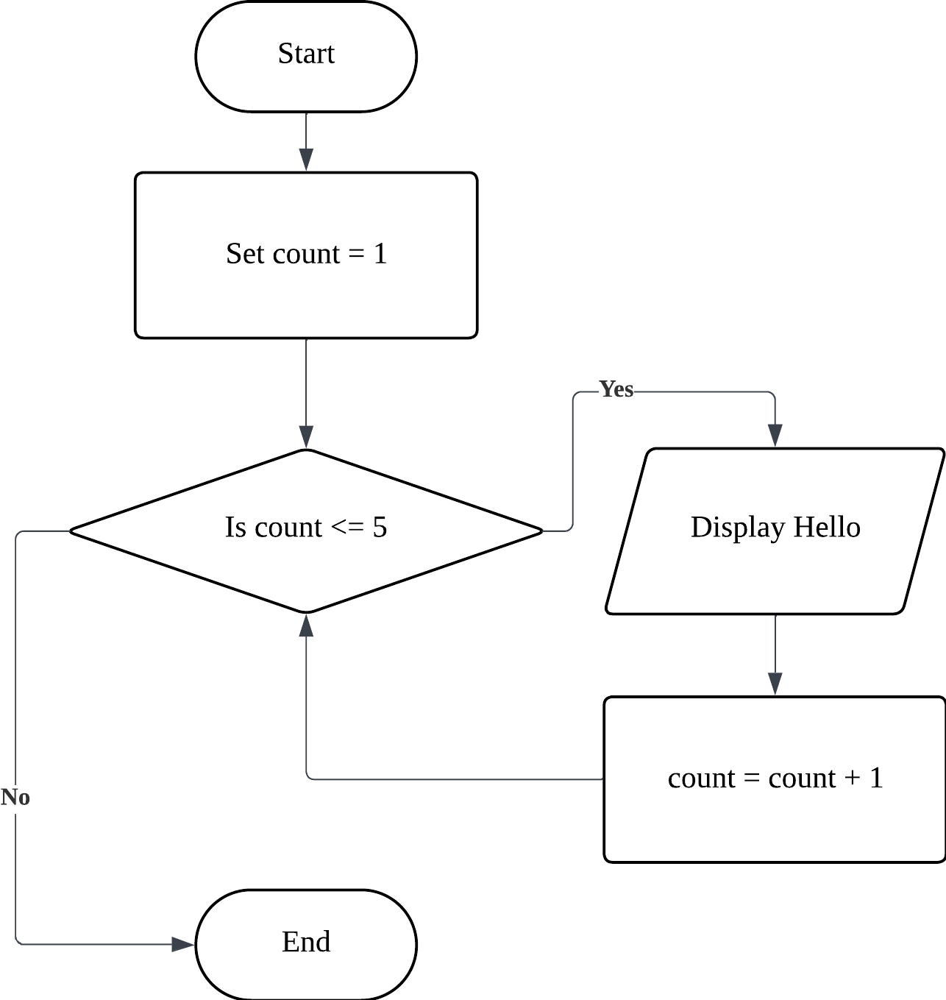

What is a Flowchart?
A Flowchart is a type of diagram that represents an algorithm, workflow, or process. It shows the steps as boxes of various kinds, and their order by connecting them with arrows.
In CSC402, flowcharts are essential for capturing the "Execution Path" of a program—helping you see exactly where decisions are made and where loops repeat.
Standard ANSI Symbols
Hover over each symbol to reveal its specific purpose in an algorithm.
Terminator
(Oval/Capsule)Used to represent the START and END of the process.
Process
(Rectangle)Represents a calculation or assignment (e.g., Total = A + B).
Input/Output
(Parallelogram)Used for READ or DISPLAY operations.
Decision
(Diamond)A conditional step (If/Else). Leads to 'Yes' and 'No' paths.
Connector
(Small Circle)Connects different parts of a flowchart on the same page.
Flowline
(Arrow)Shows the direction of process execution.
Practical Flowchart Examples
Study how logic flows through different programming structures. Click an image to expand and zoom.

1. Sequence
The simplest flow where steps happen one after another.
Example: Calculating the area of a rectangle.
- Start → Input Length/Width
- Process Area = L * W
- Output Area → End

2. Selection
Uses a Decision Diamond to branch the logic based on a condition.
Example: Pass/Fail grading system.
- Condition: Is Mark >= 50?
- Yes: Display "Pass"
- No: Display "Fail"

3. Repetition
Also known as a Loop. Steps are repeated until a condition is met.
Example: Displaying "Hello" 5 times.
- Start → Set count = 1
- Check: Is count <= 5?
- If Yes: Display "Hello" → count + 1 → Loop back
- If No: End Loop
Design Principles & Rules
Adhering to these industry standards ensures your logic is technically sound and exam-ready.
Directional Flow
Logic must strictly flow Top-to-Bottom or Left-to-Right. Avoid upward flowlines except in Repetition loops.
Single Entry/Exit
A valid algorithm must have exactly one Start and one End point to prevent logical deadlocks.
Standard Geometry
Only use authorized ANSI shapes. A process must be a rectangle; an I/O operation must be a parallelogram.
Decision Binary
Every decision diamond must result in exactly two paths: True (Yes) and False (No).
Language Independent
Avoid specific programming syntax (like printf or cin). Use generic terms like Read or Display.
Logical Integrity
Flowlines must not cross. Use Connectors if the diagram becomes too complex for one area.
Flowchart
Best for conceptualizing the execution path and branching logic.
Pseudocode
Best for detailed mathematical steps and preparing for actual coding.
CSC402 Pro-Tip: Which one should I use?
Use Flowcharts during the initial design phase to confirm your logic flow with your team. Switch to Pseudocode when you are ready to finalize details like variable assignments and mathematical formulas before writing actual C++/Java code.
Logic Translated to Text
Finished your diagram? Now learn how to write it in a structured, human-readable format.
Continue to Pseudocode